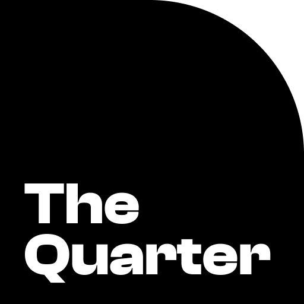
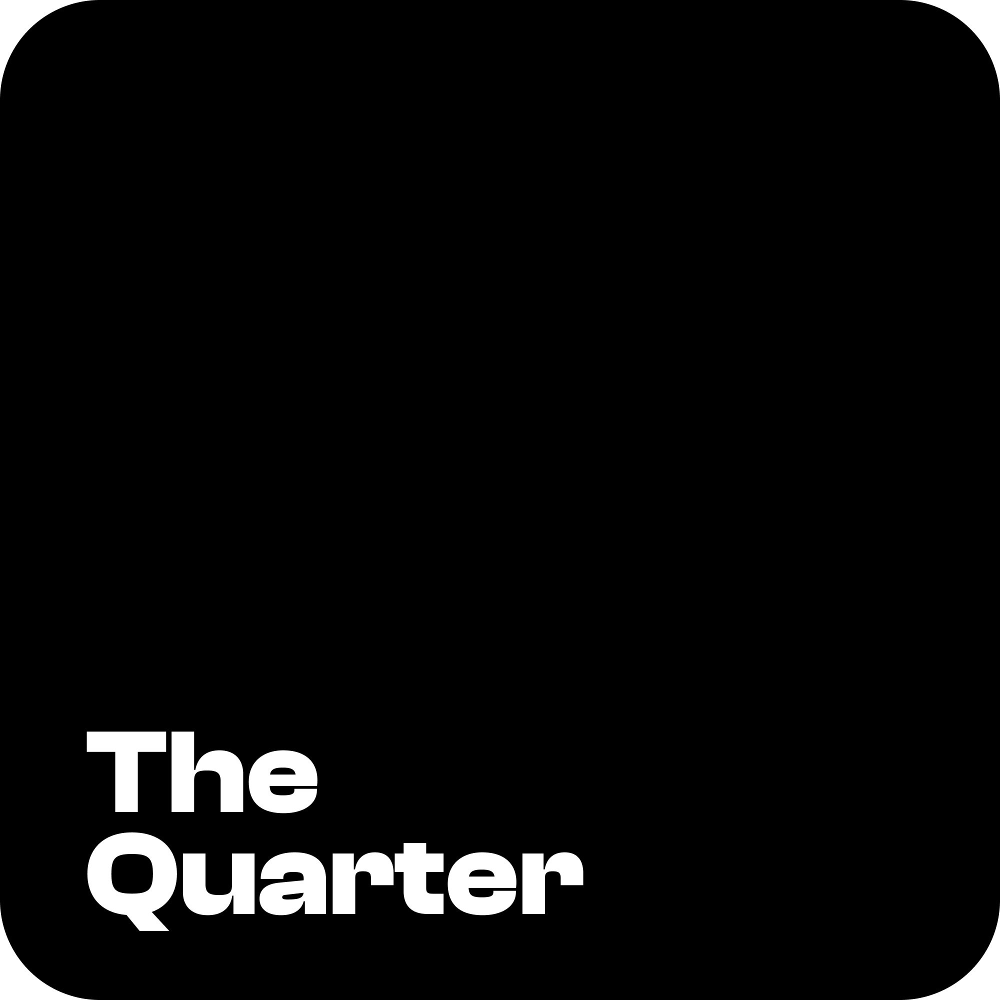

App icon
Avatar / faviconThe quarter-circle cut in the icon is the brand's one geometric motif — it echoes the "Quarter" name and reappears as the gold arc on the Quarter Card and in section accents. Keep the wordmark exactly as provided; never redraw it.